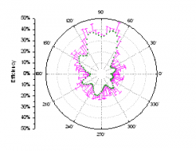

Weitere relevante Videos: Fehlerbalken zu einem Diagramm hinzufügen
Weitere relevante Videos: Fehlerbalken zu einem Diagramm hinzufügen
 Weitere relevante Videos: Fehlerbalken zu einem Diagramm hinzufügen
Weitere relevante Videos: Fehlerbalken zu einem Diagramm hinzufügen
Origin kann Fehlerbalken in einem Diagramm zeichnen, um Fehler oder Unsicherheiten in einer aufgezeichneten Messung zu kennzeichnen. Origin enthält Bedienelemente zur benutzerdefinierten Anpassung für Fehlerbalken in 2D- und 3D-Diagrammen.
In 2D-Diagrammen können Sie
|
|
In 3D-Diagrammen können Sie
|
|
|  |  |
 |
|
Fehlerbalken sind ein Standardmerkmal von Boxdiagrammen und werden automatisch hinzugefügt, wenn das Boxdiagramm erstellt wird. Optionen zum Steuern von Fehlerbalken (Whisker) in Boxdiagrammen befinden sich auf den Registerkarten Box und Linien des Dialogs Details Zeichnung. |
Diese Methode setzt voraus, dass Sie die Diagrammzuordnungen der Arbeitsblattspalte einstellen, bevor sie die Zeichnung erstellen. Jeder zugeordnete Fehlerbalken-Datensatz muss sich rechts neben dem Y-Datensatz befinden, auf den er sich bezieht (Beispiel: Y1, yEr1, Y2, yEr2, Y3, yEr3 usw.).
Verwenden Sie die Dialoge Diagrammeinstellungen (Origin-Arbeitsmappe) oder Daten zum Zeichnen auswählen (Excel-Arbeitsmappe), um Datensätze als Fehlerbalken zu zeichnen. Beachten Sie, dass diese Dialoge es ermöglichen, jede beliebige Arbeitsblattspalte als Fehlerbalkendatensatz zuzuweisen, ungeachtet der Diagrammzuordnung einer Spalte oder der Position der Spalte, auf die sie sich bezieht.
Hinweis:
|
Zu 3D-Diagrammen können Fehlerbalken auch über den Dialog Details Zeichnung aus vorhandenen Datensätzen hinzugefügt werden. Für diese Methode müssen die Fehlerdaten sich wie eine Datenspalte in dem gleichen Arbeitsblatt befinden (für Arbeitsblattdaten) oder wie ein Matrixobjekt in dem gleichen Matrixblatt (für Matrixdaten).
Es ist möglich, Fehlerbalken zu 3D-Balkendiagrammen, 3D-Punktdiagrammen mit Ankerlinien und 3D-Punktdiagrammen, die auf Grundlage von Arbeitsblattdaten erstellt wurden, oder 3D-Oberflächendiagrammen, 3D-Balkendiagrammen und 3D-Punktdiagrammen, die aus Matrixdaten erstellt wurden, hinzuzufügen.
Sie gehen folgendermaßen vor:
Fehlerbalken für 3D-Diagramme sind nur für die Z-Richtung verfügbar mit Ausnahme von 3D-Punkt- und 3D-Punktdiagrammen mit Ankerlinien, die aus Arbeitsblattdaten erstellt wurden. Bei diesen beiden Diagrammtypen sind Fehlerbalken für alle Richtungen, X, Y und Z, verfügbar.
Sie können Fehlerbalken zu einem 2D-Diagramm durch Berechnen einfacher Datensatzstatistiken hinzufügen.
Diese Methode erstellt Fehlerbalkenwerte durch Berechnen von:
Wenn Fehlerbalken zu einer Datenzeichnung hinzugefügt werden, werden die Fehlerdaten in einer neuen Spalte in dem Quellarbeitsblatt ausgegeben. Die Spalte enthält einen Kommentar, der den Fehlerbalkentyp angibt. Die Formel, die zur Berechnung der Fehlerbalken verwendet wird, wird im Dialog Werte setzen angezeigt.
Der Dialog Details Zeichnung enthält Bedienelemente zur benutzerdefinierten Anpassung für Fehlerbalken in 2D- und 3D-Diagrammen.
Der Dialog Details Zeichnung listet die Fehlerbalkendaten unter der zugehörigen Zeichnung im linken Bedienfeld auf. Ist das Symbol Fehlerbalken ausgewählt, erscheint die Registerkarte Fehlerbalken auf der rechten Seite des Dialogs.
Auf dieser Registerkarte können Sie:
Hinweis: Für Polardiagramme können Sie nur Fehlerbalken als Linien für Fehler zeichnen, die auf dem "r"-Faktor gemessen wurden.
Wenn das Zeichnungssymbol Original im linken Bedienfeld des Dialogs Details Zeichnung markiert ist, wird auf der rechten Seite eine Registerkarte Fehlerbalken angezeigt.
Auf dieser Registerkarte können Sie: